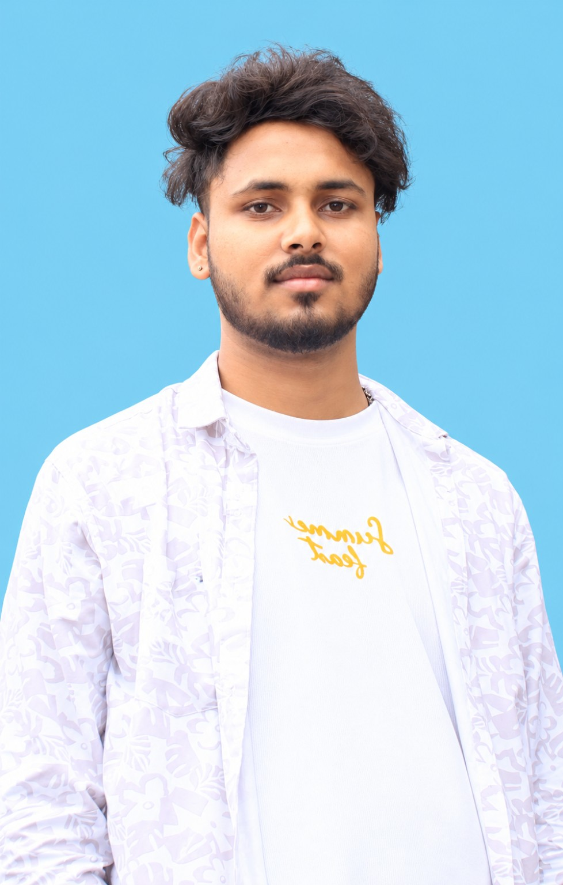

⌁
Cybersecurity
Learning the foundations of digital security, common threats, and defensive thinking.
I’m a BCA student at RKDF University, Ranchi, exploring cybersecurity, ethical hacking, and Generative AI. I’m building practical skills, learning responsibly, and working toward an IT career where security and AI meet.

● ONLINE / LEARNINGI want to combine technical understanding with responsible AI to help create safer digital experiences.
I’m pursuing a Bachelor of Computer Applications (BCA) at RKDF University, Ranchi. My current focus is building strong foundations in computing while exploring cybersecurity, ethical hacking, and Generative AI.
I believe the best way to learn is by practising, documenting what I discover, and improving one project at a time. In security, I value permission, responsible testing, and clear communication.
This portfolio is my growing professional space. As I complete real projects and courses, I’ll add verified results, certificates, and repository links here.
These are learning areas rather than claims of professional certification. The page can be updated as skills grow.
Learning the foundations of digital security, common threats, and defensive thinking.
Exploring authorized lab testing, web security concepts, and structured documentation.
Exploring AI-assisted research, prompt design, and practical responsible workflows.
Planned concepts are labelled honestly. Replace them with completed work and GitHub links when ready.
A learning project concept that helps organize security notes, explain terms, and generate revision questions with AI-assisted workflows.
A safe lab notebook for documenting networking fundamentals, authorized practice tasks, observations, and lessons learned.
A beginner-friendly resource to recognize suspicious messages, inspect links carefully, and respond safely to possible phishing.
This responsive portfolio brings together my profile, learning goals, project ideas, contact information, and a local voice-enabled helper.
College learning paired with self-study and hands-on practice.
RKDF University · Ranchi, Jharkhand, India
Developing a foundation in computing and programming while exploring cybersecurity and AI.
Focused on responsible study, authorized lab practice, and building demonstrable projects.
I’m interested in connecting with fellow learners, mentors, collaborators, and internship opportunities in cybersecurity and AI.
Ask about Karan, skills, projects, education, or contact. You can type or use voice. This demo answers from portfolio information; it is not connected to a cloud AI model.